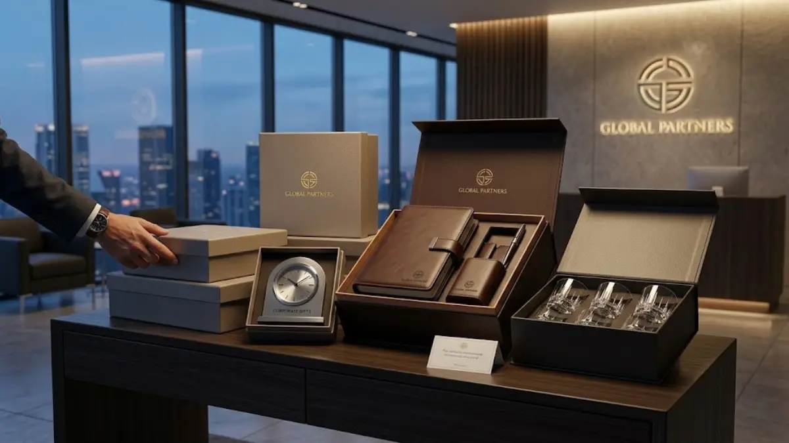

Corporate gift premium adalah kategori hadiah bisnis yang menekankan kualitas bahan, desain eksklusif, dan kesan mendalam bagi penerimanya, berbeda dari merchandise promosi biasa yang umumnya diproduksi massal dengan biaya rendah.
Apa Itu Corporate Gift Premium?
Konsep ini muncul karena kebutuhan perusahaan untuk menunjukkan apresiasi secara lebih bermakna kepada pihak-pihak penting dalam ekosistem bisnisnya. Berbeda dengan souvenir standar yang biasanya dibagikan dalam jumlah besar pada acara pameran atau seminar, corporate gift premium lebih sering diberikan dalam jumlah terbatas kepada penerima yang dipilih secara khusus, seperti direksi mitra, klien strategis, atau karyawan dengan kontribusi tertentu.
Karakteristik utama corporate gift premium biasanya mencakup penggunaan material berkualitas seperti stainless steel, kulit asli atau sintetis premium, kayu solid, hingga logam dengan finishing halus. Kemasan juga menjadi bagian penting, karena kesan pertama saat hadiah diterima turut memengaruhi persepsi penerima terhadap perusahaan pemberi.
Untuk Siapa Corporate Gift Premium Diberikan?
Corporate gift premium umumnya ditujukan untuk pihak-pihak yang memiliki peran strategis dalam kelangsungan bisnis, seperti klien utama, mitra kerja sama jangka panjang, investor, hingga jajaran direksi baik internal maupun eksternal.
Selain pihak eksternal, banyak perusahaan juga menggunakan corporate gift premium untuk karyawan dalam momen tertentu, misalnya penghargaan masa kerja, pencapaian target, atau perayaan hari jadi perusahaan. Pemberian hadiah kepada karyawan dengan kualitas yang sama seperti untuk klien turut membangun rasa dihargai dan loyalitas jangka panjang.
Pemilihan penerima yang tepat penting agar anggaran hadiah dialokasikan secara efektif. Perusahaan umumnya menyusun daftar prioritas penerima berdasarkan tingkat kedekatan relasi bisnis dan dampak strategis hubungan tersebut terhadap keberlangsungan usaha.

Tim bisnis memberikan corporate gift premium saat pertemuan dengan mitra
Kapan Waktu yang Tepat Memberikan Corporate Gift Premium?
Waktu pemberian corporate gift premium yang paling umum adalah pada momen perayaan akhir tahun, penandatanganan kerja sama baru, ulang tahun perusahaan, serta sebagai bentuk apresiasi atas pencapaian bersama dengan mitra bisnis.
Selain momen-momen formal tersebut, beberapa perusahaan juga memilih memberikan hadiah pada saat kunjungan bisnis penting, peluncuran produk baru, atau sebagai token perpisahan ketika seorang mitra atau karyawan senior memasuki fase baru dalam kariernya. Ketepatan waktu pemberian turut memengaruhi makna hadiah tersebut di mata penerima.
Perusahaan yang merencanakan pemberian hadiah jauh-jauh hari umumnya memiliki lebih banyak pilihan produk dan waktu produksi yang cukup untuk proses personalisasi, dibandingkan dengan pemesanan mendadak yang berisiko membatasi opsi desain maupun kualitas.
Mengapa Corporate Gift Premium Penting bagi Hubungan Bisnis?
Corporate gift premium penting karena mampu menjadi representasi nyata dari apresiasi perusahaan terhadap relasi bisnisnya, sekaligus memperkuat citra profesional dan meninggalkan kesan positif yang bertahan lama.
Dalam dunia bisnis, hubungan jangka panjang sering kali dibangun bukan hanya dari transaksi, tetapi juga dari perhatian personal yang ditunjukkan di luar konteks pekerjaan. Pemberian hadiah berkualitas menunjukkan bahwa perusahaan menghargai relasi tersebut secara serius, bukan sekadar formalitas. Selain memperkuat hubungan, corporate gift premium juga berfungsi sebagai media branding yang halus. Produk dengan logo perusahaan yang digunakan sehari-hari oleh penerima, seperti tumbler atau alat tulis premium, secara tidak langsung memperpanjang eksposur merek tanpa terkesan sebagai iklan.
Apa Saja Manfaat Corporate Gift Premium bagi Perusahaan?
Manfaat utama corporate gift premium mencakup penguatan citra profesional, peningkatan loyalitas relasi bisnis, serta menjadi sarana branding yang halus dan berkelanjutan tanpa kesan promosi berlebihan.
Dari sisi eksternal, hadiah premium dapat membedakan sebuah perusahaan dari kompetitornya yang mungkin hanya memberikan souvenir standar. Kesan eksklusif ini dapat memperkuat posisi tawar perusahaan saat bernegosiasi maupun mempertahankan kerja sama jangka panjang dengan klien besar. Dari sisi internal, pemberian hadiah premium kepada karyawan turut berkontribusi pada budaya kerja yang positif. Karyawan yang merasa dihargai cenderung lebih termotivasi dan memiliki keterikatan emosional yang lebih kuat terhadap perusahaan tempat mereka bekerja.
Bagaimana Cara Memilih Corporate Gift Premium yang Tepat?
Cara memilih corporate gift premium yang tepat adalah dengan mempertimbangkan profil penerima, relevansi fungsi produk, kualitas material, kemungkinan personalisasi, serta kesesuaian anggaran perusahaan.
Langkah pertama adalah memahami siapa penerima hadiah tersebut. Hadiah untuk klien korporat besar biasanya perlu tampil lebih formal dan elegan, sementara hadiah untuk karyawan bisa lebih fleksibel dan fungsional sesuai kebutuhan sehari-hari mereka.
Langkah berikutnya adalah mempertimbangkan fungsi produk. Barang yang dapat digunakan secara rutin, seperti tumbler, tas kerja, atau alat tulis, umumnya lebih bernilai dibandingkan produk dekoratif yang hanya dipajang sesaat kemudian tidak lagi digunakan.
Aspek personalisasi juga penting untuk diperhatikan. Penambahan nama, logo perusahaan, atau ucapan khusus dapat meningkatkan nilai emosional hadiah, sekaligus menjadikannya lebih berkesan dibandingkan produk generik yang dijual bebas di pasaran. Terakhir, kesesuaian dengan anggaran tetap menjadi pertimbangan praktis. Perusahaan sebaiknya menetapkan kisaran anggaran per kategori penerima agar alokasi dana tetap efisien tanpa mengurangi kualitas hadiah yang diberikan.
Apa Saja Faktor yang Memengaruhi Kualitas Corporate Gift Premium?
Faktor yang memengaruhi kualitas corporate gift premium meliputi pemilihan material, ketelitian proses produksi, kualitas kemasan, serta ketepatan waktu pengiriman kepada penerima.
Material menjadi faktor paling mendasar karena secara langsung memengaruhi daya tahan dan kesan pertama produk. Material yang mudah rusak atau cepat pudar warnanya dapat menurunkan persepsi kualitas, meskipun desain produk terlihat menarik pada awalnya. Proses produksi, termasuk teknik personalisasi seperti ukir laser, sablon, atau bordir, juga menentukan hasil akhir. Proses yang dikerjakan dengan teliti akan menghasilkan detail yang rapi dan tahan lama, dibandingkan proses yang terburu-buru demi mengejar tenggat waktu.
Kemasan turut berperan besar dalam pengalaman penerima saat membuka hadiah. Kemasan yang rapi, kokoh, dan estetis mencerminkan perhatian terhadap detail, sementara kemasan seadanya dapat mengurangi kesan eksklusif meskipun isi produknya berkualitas.
Apa Saja Kesalahan Umum dalam Memilih Corporate Gift Premium?
Kesalahan umum dalam memilih corporate gift premium antara lain memilih produk generik tanpa personalisasi, mengabaikan profil penerima, serta melakukan pemesanan mendadak tanpa perencanaan yang matang.
Banyak perusahaan tergoda memilih produk yang paling murah tanpa mempertimbangkan kesesuaiannya dengan citra merek. Padahal, hadiah yang tidak selaras dengan identitas perusahaan justru dapat menimbulkan kesan kurang profesional di mata penerima. Kesalahan lain adalah mengabaikan preferensi atau kebutuhan penerima. Produk yang tidak relevan dengan gaya hidup atau kebutuhan sehari-hari penerima cenderung tidak digunakan, sehingga tujuan branding dan apresiasi tidak tercapai secara optimal.
Perencanaan yang terburu-buru juga sering menjadi masalah. Pemesanan mendadak dapat membatasi pilihan produk, mengurangi waktu untuk proses personalisasi, dan berisiko pada keterlambatan pengiriman yang justru merusak kesan positif yang ingin dibangun.
Tips Memaksimalkan Nilai Corporate Gift Premium
Tips memaksimalkan nilai corporate gift premium meliputi perencanaan anggaran sejak awal tahun, konsistensi tema dengan identitas merek, serta pemilihan momen pemberian yang tepat agar kesan yang ditinggalkan lebih maksimal.
Perencanaan anggaran sejak awal memungkinkan perusahaan menyusun strategi hadiah secara lebih terstruktur, termasuk menentukan kategori penerima dan jenis produk yang sesuai untuk masing-masing kelompok tanpa terburu-buru menjelang momen penting.
Konsistensi tema visual, seperti warna, logo, dan gaya kemasan yang selaras dengan identitas merek, akan memperkuat pengenalan perusahaan di mata penerima. Hal ini membuat hadiah tidak hanya berfungsi sebagai apresiasi, tetapi juga sebagai bagian dari strategi branding jangka panjang. Terakhir, memilih momen yang tepat untuk pemberian hadiah, seperti saat pencapaian bersama atau perayaan tertentu, akan membuat hadiah terasa lebih relevan dan bermakna dibandingkan pemberian tanpa konteks yang jelas.
Perbandingan Kategori Corporate Gift Premium
Secara umum, corporate gift premium dapat dikelompokkan ke dalam beberapa kategori, seperti gift set fungsional, produk bernuansa executive, serta paket yang disesuaikan dengan kebutuhan wilayah pengiriman penerima.
Gift set fungsional biasanya terdiri dari kombinasi produk yang digunakan sehari-hari, seperti tumbler, agenda, dan alat tulis. Kategori ini cocok untuk pemberian dalam jumlah menengah hingga besar karena relatif fleksibel untuk berbagai jenis penerima. Produk bernuansa executive umumnya memiliki desain lebih formal dan material lebih premium, sehingga lebih cocok diberikan kepada jajaran direksi atau mitra strategis yang membutuhkan kesan hadiah yang lebih eksklusif. Sementara itu, paket yang disesuaikan dengan kebutuhan wilayah pengiriman penting bagi perusahaan yang memiliki jaringan relasi bisnis di berbagai kota, agar proses pengiriman dapat berjalan lancar tanpa mengurangi kualitas maupun ketepatan waktu penerimaan hadiah.
Corporate gift premium merupakan investasi jangka panjang dalam membangun hubungan bisnis yang lebih kuat, bukan sekadar pengeluaran seremonial semata. Pemilihan produk yang tepat sebaiknya mempertimbangkan profil penerima, kualitas material, personalisasi, serta ketepatan momen pemberian agar hadiah benar-benar memberikan dampak positif terhadap citra dan hubungan bisnis perusahaan. Perencanaan yang matang, mulai dari penentuan anggaran hingga pemilihan kategori produk seperti gift set fungsional, produk bernuansa executive, atau paket yang disesuaikan dengan kebutuhan wilayah pengiriman, akan membantu perusahaan memaksimalkan nilai dari setiap hadiah yang diberikan kepada relasi bisnisnya.
- Konsultasikan kebutuhan corporate gift premium Anda dengan tim kami
- Dapatkan rekomendasi produk sesuai profil penerima dan budget
- Nikmati proses pengadaan yang efisien dari desain hingga pengiriman